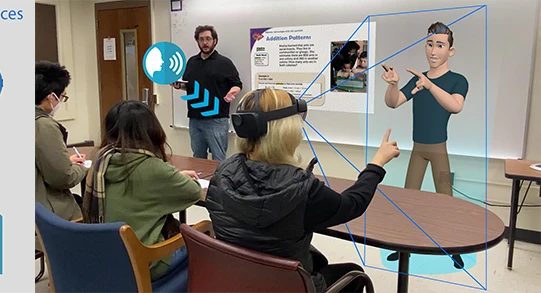
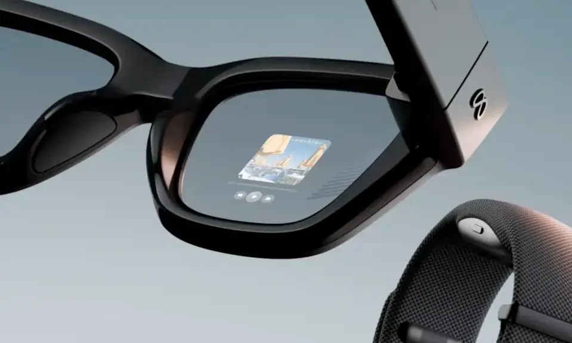

E se você não conseguisse acompanhar a conversa?
A barreira não está na capacidade de aprender. Está no acesso à informação, à comunicação e à participação.
Criação e institucionalização da escola no Rio de Janeiro, marco da educação de surdos no país.
Registro de sinais por um ex-aluno surdo do instituto: um dos primeiros registros de sinais no Brasil.
Fortalecimento do oralismo: a fala passou a ser priorizada, e a língua de sinais, desvalorizada no ensino.
Pessoas com deficiência se organizam como sujeitos políticos, não como objetos de caridade.
Reorganização da federação com protagonismo das próprias pessoas surdas.
Participação, acesso à informação e reconhecimento da língua de sinais.
Reconhece a Libras como meio legal de comunicação e expressão.
Regulamenta a lei: formação de professores, intérpretes e ensino.
Inclui a educação bilíngue de surdos na LDB como modalidade de ensino.
A Libras tem gramática própria: não é o português feito com as mãos.
Aulas, debates e trabalhos em grupo dependem do que é dito em voz alta.
Em rodas de conversa, várias pessoas falam, se interrompem e riem ao mesmo tempo.
Sem acesso ao que é discutido, a participação fica limitada.
Microsoft HoloLens, Unity e animações por captura de movimento. Um protótipo educacional, não um produto de uso cotidiano.

Ouvimos o que seria mais útil no dia a dia: ler a conversa e saber quem está falando.
Um óculos de uso cotidiano, com a conversa legendada na lente.
MVP: primeiro um aplicativo de smartphone com legendas em português, para validar a função antes da forma.
Menos barreiras. Mais participação.

Esta seção complementa as telas 2–6 para eventuais perguntas e para o agente de implementação. Não é necessário projetá-la na apresentação principal.
A escola começou suas atividades em janeiro de 1856; a fundação oficial é associada à Lei nº 939, de 26 de setembro de 1857. O INES identifica a participação do educador surdo francês E. Huet e a influência francesa na circulação de sinais. O manual do agente deve evitar simplificar o marco como se todas as comunidades surdas brasileiras tivessem surgido apenas naquela instituição. [S03]
2. Congresso de Milão (1880)
O encontro internacional fortaleceu a preferência pelo método oral de ensino e é um marco simbólico na marginalização educacional das línguas de sinais. Não foi uma lei brasileira nem suprimiu imediatamente todas as práticas em sinais. [S04, S05]
A FENEIS informa ter sido fundada em 16 de maio de 1987 e atua em direitos linguísticos, educação, cultura e trabalho. Um movimento político amplo por direitos das pessoas com deficiência ganhou força na redemocratização. [S06, S07]
A Lei 14.191/2021 estabelece Libras como primeira língua e português escrito como segunda na modalidade de educação bilíngue de surdos, que pode ser ofertada em diferentes organizações escolares. Não confundir “escola comum” com ausência automática de apoio ou de Libras. [S10, S11]
Documento de consulta do CNE com base no Censo Escolar 2024: 61.623 matrículas PAEBS; 55.660 em escolas comuns e 5.963 em escolas/classes/turmas bilíngues. 55.660 ÷ 61.623 ≈ 90,33%. A categoria PAEBS é mais ampla do que pessoas surdas sinalizantes e não corresponde à população total com deficiência auditiva. [S12]
O IBGE registrou 2,555 milhões de pessoas de 2 anos ou mais com dificuldade funcional permanente para ouvir no Censo 2022, conforme o critério adotado. Esse número não deve ser rotulado como “2,6 milhões de usuários de Libras” ou “2,6 milhões de surdos sinalizantes”. [S13]
A Câmara Paulista para Inclusão identifica exatamente os cinco URLs enviados como a série “História do Movimento Político das Pessoas com Deficiência no Brasil”. A série deriva da produção institucional registrada em 2010; o artigo de referência menciona publicação dos vídeos em 2011. O recorte é movimento de pessoas com deficiência em geral. [S01, S02]
A pesquisa permitiu confirmar a correspondência entre os cinco links e a série documental por fonte secundária confiável. Não houve verificação quadro a quadro do conteúdo dos cinco vídeos; portanto, o roteiro não inclui falas literais, timestamps ou depoimentos atribuídos a episódios específicos. Se o agente inserir cenas, deverá assistir e confirmar a passagem e o crédito antes de usar.
Autores: Fu-Chia Yang, Christos Mousas e Nicoletta Adamo (Purdue University). Trabalho “Holographic Sign Language Interpreters”, SIGGRAPH 2022 Educator’s Forum. DOI: 10.1145/3532724.3535593. [S16]
| Aspecto | Descrição comprovada |
|---|---|
| Dispositivo | Microsoft HoloLens (realidade mista), volumoso em relação a óculos de armação tradicional. |
| Entrada | Áudio da fala, transformado em texto com Azure Speech-to-Text. |
| Saída | Avatar 3D controlado por Unity, com animações de sinais registradas por captura de movimento. |
| Língua/sistema | O protótipo da publicação SIGGRAPH utiliza Signed Exact English (SEE), que não é Libras. |
| Escopo | Protótipo educacional, com domínio de sinais e lições de matemática limitados. |
| Estudo correlato | Artigo de interação em sala de aula incluiu 8 participantes e estudou preferências de exibição/manipulação do avatar. |
| Limitação da evidência | Não comprova melhora universal de aprendizado, nem valida um produto pronto para uso cotidiano. |
Evitar dizer que o aparelho “causa constrangimento” como fato observado na pesquisa. É razoável formular como hipótese de design: um headset volumoso pode restringir conforto, aparência e aceitação social em usos prolongados; isso precisa ser estudado. O Unmute propõe explorar uma arquitetura mais próxima de óculos convencionais, sem atribuir fracasso ao projeto de Purdue. [S16–S18]
Os próprios pesquisadores apontam a importância de fatores humanos e de novas avaliações. O foco atual do Unmute não é traduzir automaticamente a fala para Libras; é reconhecer fala e apresentá-la como texto, com contexto sobre os interlocutores. São problemas técnicos diferentes. [S18]
Captação → detecção de atividade de voz (VAD) → redução de ruído → reconhecimento de fala (ASR) → diarização (“Pessoa 1/2”) → formatação/legenda → exibição monocular → resumo opcional, explicitamente rotulado como IA.
Hipótese: unidade piloto com uma lente com exibição e processamento de IA em smartphone do usuário. Valores de planejamento em R$, não cotação de fornecedores. A faixa de óptica é uma reserva de engenharia sem proposta comercial confirmada.
| Componente | Faixa (R$) |
|---|---|
| Óptica AR monocular | 900–3.500 |
| Microfones MEMS e passivos | 60–190 |
| Microcontrolador e conectividade | 40–130 |
| Bateria recarregável | 70–180 |
| PCB, flex, drivers e conectores | 140–420 |
| Armação, suportes e lentes básicas | 160–600 |
| Sensores e controles | 35–150 |
| Gestão de energia e diversos | 85–230 |
| Total | 1.490–5.400 |
É mais simples que o design final desejado. [S23, S25]
Engenharia de software/hardware; montagem de protótipos e retrabalho; ferramentais; testes óticos e de segurança;
certificações; transporte e impostos; smartphone; manutenção; armazenamento; internet e inferência em nuvem.
Não tratar BOM como custo industrial total.
É importante reconhecer concorrentes e trabalhos anteriores para que o diferencial proposto não dependa de alegações de ineditismo.
| Referência | O que já existe / como citar |
|---|---|
| Purdue (2022) | Avatar sinalizando SEE em HoloLens; pesquisa acadêmica, não óculos cotidiano de legendagem. |
| XRAI AR2 (2025) | Fabricante anunciou legendas, Speaker ID, tradução e resumos de IA em um produto de óculos. Valores, precisão e autonomia alegados são informações do fabricante. |
| XanderGlasses | Óculos para exibir legendas em tempo real. A empresa divulga modelos com operação offline. |
| Unmute (proposta) | Foco no português brasileiro, educação, interface leve e construção/validação nacional; diferenciais pretendidos, ainda não comprovados. |
“Sim, existem iniciativas acadêmicas e produtos comerciais que comprovam o interesse nessa categoria. Nosso projeto não afirma ter inventado a legendagem em óculos; propomos explorar a tecnologia com foco em acessibilidade, português brasileiro, design discreto e participação de usuários surdos locais.” [S16, S19, S20]
| Métrica | O que mede |
|---|---|
| WER / CER | Erro de transcrição de palavras/caracteres em português brasileiro. |
| DER / falantes | Erro de diarização e estabilidade dos rótulos de interlocutores. |
| Latência fim-a-fim | Tempo entre a fala e a legenda no display. |
| Compreensão | Perguntas práticas sobre o que foi dito, com e sem o dispositivo, em estudo apropriado. |
| Conforto | Peso percebido, tempo de uso, legibilidade, fadiga e distração. |
| Confiança/privacidade | Compreensão de avisos e controle real sobre captação, retenção e compartilhamento. |
Não presumir que áudio captado em ambiente público pode ser gravado indefinidamente. Preferir processamento local quando viável, retenção mínima, avisos de captação e avaliação jurídica conforme LGPD e contexto de uso. A identificação “Pessoa 1” não exige criar cadastro biométrico. [S24]
[S01] Série documental (cinco episódios) — Câmara Paulista para Inclusão: artigo que identifica os cinco links como partes de um documentário sobre o movimento de pessoas com deficiência no Brasil. https://www.camarainclusao.com.br/noticias/videos-contam-a-historia-do-movimento-das-pessoas-com-deficiencia-no-brasil/
[S02] História do movimento político das pessoas com deficiência no Brasil — Secretaria de Direitos Humanos da Presidência da República; livro de 2010, via GEDH/UERJ. https://gedh-uerj.pro.br/documentos/historia-do-movimento-politico-das-pessoas-com-deficiencia-no-brasil-2/
[S03] Histórico institucional do INES — Instituto Nacional de Educação de Surdos. Documento com distinção entre 1856 (funcionamento) e 1857 (data oficial). https://www.ines.gov.br/images/inesnet/boletim/BS-INES%202018/Boletim09-Esp_2018.pdf
[S04] História da Educação de Surdos — UFSC, material acadêmico sobre o Congresso de Milão e seus debates históricos. https://www.libras.ufsc.br/colecaoLetrasLibras/eixoFormacaoEspecifica/historiaDaEducacaoDeSurdos/assets/258/TextoBase_HistoriaEducacaoSurdos.pdf
[S05] Histórico da língua de sinais — Ministério da Ciência, Tecnologia e Inovação / MAST, panorama de 1857 a 1880 e evolução da educação de surdos. https://www.gov.br/mast/pt-br/assuntos/noticias/2025/setembro/conheca-um-historico-da-lingua-brasileira-de-sinais
[S06] FENEIS: missão e data de fundação — Federação Nacional de Educação e Integração dos Surdos. https://feneis.org.br/o-que-e/
[S07] Linha do tempo do movimento de direitos — Fundação FHC, acontecimentos da organização política de pessoas com deficiência. https://fundacaofhc.org.br/linhasdotempo/pessoas-com-deficiencia/
[S08] Lei nº 10.436/2002 — Lei de reconhecimento da Libras como meio legal de comunicação e expressão. https://www.planalto.gov.br/ccivil_03/leis/2002/l10436.htm
[S09] Decreto nº 5.626/2005 — Regulamentação da Lei de Libras e ações de acessibilidade educacional. https://www.planalto.gov.br/ccivil_03/_ato2004-2006/2005/decreto/d5626.htm
[S10] Lei nº 14.191/2021 — Altera a LDB para prever a modalidade de educação bilíngue de surdos. https://www2.camara.leg.br/legin/fed/lei/2021/lei-14191-3-agosto-2021-791630-publicacaooriginal-163262-pl.html
[S11] Definição oficial de educação bilíngue de surdos — INEP, FAQ de Educação Especial, atualizado em 2026. https://www.gov.br/inep/pt-br/acesso-a-informacao/perguntas-frequentes/censo-escolar/educacao-especial/o-que-e-educacao-bilingue
[S12] Consulta Pública - Diretrizes Nacionais de Educação Bilíngue — Brasil Participativo/CNE; inclui quadro do Censo Escolar 2024 com 61.623, 55.660 e 5.963 matrículas. https://brasilparticipativo.presidencia.gov.br/processes/dcnebilinguesurdos/f/4971/
[S13] Censo 2022 - pessoas com deficiência — IBGE; dados gerais sobre dificuldade funcional de ouvir, não equivalentes ao número de sinalizantes de Libras. https://www.ibge.gov.br/biblioteca/visualizacao/livros/liv102178.pdf
[S14] Inclusão escolar de alunos surdos — Lacerda, C.B.F. (2006), artigo científico com relatos de alunos, professores e intérpretes em escola regular. https://www.scielo.br/j/ccedes/a/KWGSm9HbzsYT537RWBNBcFc/?lang=pt
[S15] Barreiras de acesso e direitos — INEP, definição de educação bilíngue: Libras como língua de instrução e interação. https://www.gov.br/inep/pt-br/acesso-a-informacao/perguntas-frequentes/censo-escolar/educacao-especial/o-que-e-educacao-bilingue
[S16] Holographic Sign Language Interpreters (SIGGRAPH 2022) — Yang, Mousas & Adamo; artigo de 2 páginas, DOI 10.1145/3532724.3535593. https://web.ics.purdue.edu/~cmousas/papers/conf22-SIGGRAPH-SignAvatar.pdf
[S17] Holographic Sign Language Avatar Interpreter (2022) — Yang, Mousas & Adamo; estudo de interação com oito participantes. DOI 10.1002/cav.2082. https://onlinelibrary.wiley.com/doi/full/10.1002/cav.2082
[S18] Entrevista dos autores Purdue na SIGGRAPH — Texto oficial SIGGRAPH explicando escopo e limitações do protótipo. https://blog.siggraph.org/2022/07/assistive-technology-enters-the-classroom-with-holographic-sign-language-interpreters.html/
[S19] XRAI: AR2 apresentado em 2025 — Exemplo comercial de óculos com legendas, speaker ID e resumos por IA. Alegações de desempenho são do fabricante. https://xrai.glass/blog/ar2-launched-at-awe-2025/
[S20] XanderGlasses — Exemplo alternativo de legendagem vestível; tecnologia independente de smartphone nos modelos descritos pela empresa. https://www.xanderglasses.com/
[S21] Revisão de speaker diarization (2025) — O’Shaughnessy, Applied Sciences, DOI 10.3390/app15042002, desafios técnicos de separar turnos de fala. https://www.mdpi.com/2076-3417/15/4/2002
[S22] XRAI: speaker identification — Documentação do produto observa dependência de modelos e serviço de transcrição para rótulos de falantes. https://knowledge.xrai.glass/speaker-identifcation
[S23] LILYGO T-Glass — Referência comercial de prototipagem de óculos com ESP32-S3 e display prismático, não comparável a produto AR final. https://lilygo.cc/products/t-glass
[S24] ANPD: perguntas frequentes LGPD — Bases gerais de tratamento de dados e proteção da privacidade. https://www.gov.br/anpd/pt-br/acesso-a-informacao/perguntas-frequentes
[S25] LILYGO T-Glass: documentação técnica — Descrição da placa, microfone, bateria, display e conectividade de referência. https://wiki.lilygo.cc/products/other/t-glass/
[S26] Adafruit: microfone MEMS PDM — Módulo comercial US$ 4,95/unidade, exemplo de âncora de custo - não cotação do produto final. https://www.adafruit.com/product/3492
[S27] DigiKey: Espressif ESP32-S3 — Preço unitário de referência do módulo ESP32-S3-WROOM-1-N8R2, sujeito a variações e estoque. https://www.digikey.com.br/en/products/detail/espressif-systems/ESP32-S3-WROOM-1-N8R2/15200058
[S28] VLibras: aviso sobre não substituir intérprete humano — Governo Digital; observação pública de limitações de tradução automatizada. https://www.gov.br/governodigital/pt-br/acessibilidade-e-usuario/vlibras